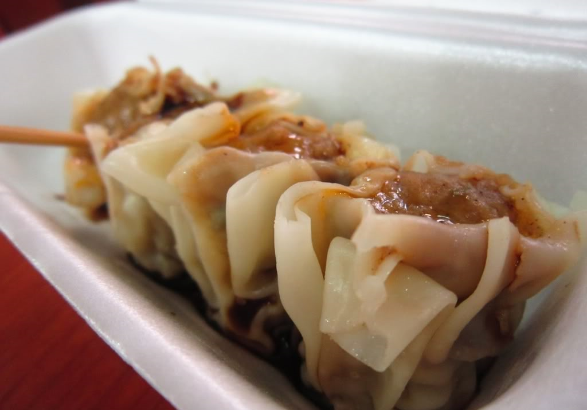

Siomai Recipe

Description
Siomai in the Philippines is often ground pork, beef, shrimp, and the like. It is combined with extenders like garlic, green peas, carrots and among others which is then wrapped in wonton wrappers. It is commonly steamed, with a popular variant being fried, resulting in a crisp exterior..
Ingredients
- 2 cups finely ground pork
- 2 teaspoons finely chopped ginger
- 2 teaspoons of sugar
- 1/2 teaspoon of salt
- 1/4 cup chopped turnips(optional)
- 3 tablespoons of soy sauce
- 1 tablespoon of sesame oil
- 1 teaspoon of cornstarch
- siomai/wonton wrappers
Instructions
- In a large bowl, combine pork, ginger, sugar and salt. Add the pork fat to make the filling moist upon cooking. You may also add chopped shrimp, turnips (singkamas) and carrots.
- Blend in soy sauce, sesame oil and cornstarch.
- Mix all the ingredients with your hands. Every now and then, get a handful of the mixture and throw it hard back into the bowl. This technique will give the mixture the need sticky texture.
- Place a spoonful of the mixture at the center of each wonton wrapper. Gather the sides of the wrapper up around the filling. You may place chopped carrots or shrimp on top to each dumpling.
- Prepare the steamer. Put water )about one centimeter high) at the base of the steamer. Let water boil over medium heat. Place a sheet of cheesecloth on top of the steamer holes, leaving the outermost holes uncovered to allow steam to rise to the cooking chamber. Arrange the dumplings on top of the cheesecloth. Cover the steamer. The cloth will absorb the moisture that will result from the steam and prevent the dumplings from losing their shape.
- Let dumplings steam for 20 minutes or until pork is thoroughly cooked. Serve with clamansi soy sauce dip.
To make the calamansi soy sauce dip
Mix together ¼ cup soy sauce and 2 tablespoons calamansi juice.